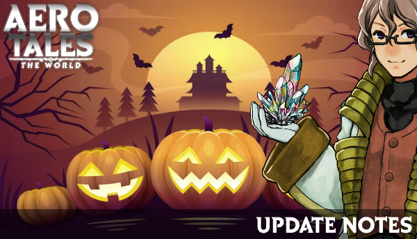

News

Here is the list of changes in this update. You can click to see full list.
ENGLISH
- EVENT
- Halloween Trader Winnie NPC has been added to Honam Kingdom. You can exchange with candies.
- How to earn candies?
- Completing in-game events.
- Complete the Jack'O Lantern Raid on raid times.
- Complete Trick Or Treat! quest.
- MAP
- Jack'o Lantern Raid map has been renewed and added to the game with the Halloween event.
- Carnival map is added to the Honam Kingdom.
- GENERAL
- A new free inventory page has been added to all players' inventory.
- Now, craft chance rates will be public.
- Now, if the upgrade to +4 or higher is successful, an extra visual effect will occur on the player.
- Slightly changed the color tone of the Halloween Motostick mount.
- The required level range of the item for the Blacksmith Job has been increased from 15 to 30.
- It will no longer be possible to establish 2 separate stalls in 2 different channels.
- You can no longer create a stall if you have more than 40 items in your message box.
- HONOR
- Spinning a lucky wheel will now reward 25 Honor Points.
- DUNGEON
- Frozen Dungeon dungeon has been nerfed.
- Drakon Pit dungeon has been nerfed.
- Elegant Cavern dungeon has been nerfed.
- QUEST
- Highlands Patrol daily quest has been nerfed.
- Hellmond Patrol daily quest has been nerfed.
- Dark Swamp Patrol daily quest has been nerfed.
- SYSTEM
- Bonus set features have been added to Raid and Red Clan items.
- There are two types of bonus set effects.
- Armor Bonus Effect Requirements: Helmet, Armor, Shoes.
- Accessory Bonus Effect Requirements: Necklace, Ring, Bracelet, Earrings.
- New attack mechanics have been added to raids and some bosses.
- If there is no Respawn Amulet left in your inventory when you die, an alternative option will be available to revive you by giving 600 AC.
- Added a window showing Damage Rankings for Raid, World bosses, and Sudden Wars.
- BUG FIXED
- Fixed the stuck issue in the Monte-Cargo Railway dungeon.
- You can no longer be PK in the Room Escape Event.
- Fixed the teleportation bug when jumping with the Phoenix mount on the Lotus Mine map.
- PET
- Pet skill cooldowns have been reduced.
- Fixed an issue with the pet heal skill.
- Attack pets have been boosted.
- AC SHOP
- Halloween Lizard Outfit set added to AC Shop.
- NAME TAG
- Added a visual effect to the Jester name tag.
- The visual of the Arena King name tag has been changed.
- Anti-Cheat
- AGN9 Cheat detection system has been improved.
- Fixed the error where the game would not open on Windows 7 devices.
TÜRKÇE
- ETKİNLİK
- Halloween Trader Winnie, Honam Kingdom'a eklendi. Şekerler ile takas yapabilirsiniz.
- Halloween etkinliğinde şeker kazanma sistemi aşağıdaki gibidir:
- Oyun içi etkinlikleri tamamlamak.
- Raid zamanlarında Jack'O Lantern Raidi tamamlamak.
- Şeker Ya da Şaka! görevini tamamlamak.
- HARİTA
- Jack'o Lantern Raid haritası yenilendi ve etkinlikle birlikte oyuna eklendi.
- Karnaval haritası Honam Kingdom'da aktif edildi.
- GENEL
- Tüm oyuncuların envanterine ücretsiz yeni bir envanter sayfası eklendi.
- Üretim şans oranları artık gözükecek.
- Artık demircide +4 ve üzeri geliştirmeler başarılı olursa oyuncuda ekstra bir görsel efekt oluşacak.
- Halloween Motostick bineğinin renk tonu biraz değiştirildi.
- Demirci mesleği işlemesi için itemin gerekli seviye aralığı 15'den 30'a yükseltildi.
- Artık 2 ayrı ch'de 2 ayrı pazar kuramazsınız.
- Artık mesaj kutunuzda 40'dan fazla öğe varsa pazar kuramazsınız.
- ŞAN
- Şanslı çark çevirmek artık 25 Honor Point kazandıracak.
- ZİNDAN
- Frozen Dungeon zindanı kolaylaştırıldı.
- Drakon Pit zindanı kolaylaştırıldı.
- Elegant Cavern zindanı kolaylaştırıldı.
- GÖREV
- Highlands Patrol günlük görevi kolaylaştırıldı.
- Hellmond Patrol günlük görevi kolaylaştırıldı.
- Dark Swamp Patrol günlük görevi kolaylaştırıldı.
- SİSTEM
- Raid ve Red Clan itemlerine bonus set özellikleri eklendi.
- 2 Tip bonus set efekti mevcuttur.
- Armor Bonus Efekt Gereklilikleri: Kask, Zırh, Ayakkabılar
- Accessory Bonus Efekt Gereklilikleri: Kolye, Yüzük, Bileklik, Küpe
- Raid ve bazı bosslara yeni vuruş mekanikleri eklendi.
- Artık öldüğünüzde envanterinizde hiç Respawn Amulet kalmadıysa, 600 AC vererek canlanabilmeniz için alternatif bir seçenek çıkacak.
- Raid, Dünya bossları ve Ansız savaşa Hasar Sıralaması gösteren bir pencere eklendi.
- HATA DÜZELTME
- Monte-Cargo Railway zindanındaki takılma sorunu düzeltildi.
- Odadan kaçış etkinliğinde artık PK olamazsınız.
- Lotus Mine haritasında Phoenix bineği ile zıplayınca ışınlanma hatası düzeltildi.
- PET
- Pet yetenek cooldownları azaltıldı.
- Pet can basma yeteneği ile ilgili bir sorun düzeltildi.
- Saldırı petleri güçlendirildi.
- AC SHOP
- Halloween Lizard Outfit seti AC Shop'a eklendi.
- İSİM ETİKETİ
- Jester isim etiketine görsel efekt eklendi.
- Arena King isim etiketinin görsel efekti değiştirildi.
- Anti-Hile
- AGN9 Hile tespit sistemi geliştirildi.
- Windows 7 cihazlarda oyunun açılmama hatası düzeltildi.

Here is the list of changes in this patch. You can click to see full list.
ENGLISH
-
GENERAL
- Yummy navigation algorithm has been improved.
- Low level quests adjusted.
- Mystic Swamp creatures have been made slightly easier and their levels have been reduced.
- Quest details now more readable on mobile.
- Translation added to NPC names on the map panel.
- Now, when you level-up stats and skills panels will pop-up as icons instead of appearing directly on the screen.
- Now mailbox icon will be static on mobile UI.
- You can now assign Yummy for the quest you want to do from the map window.
- Items that are not tradable will be marked "Not tradable!" in item descriptions.
- Added a setting to the name tag panel where you can hide your own name tag image.
- Now it is more easy to select mounted players.
- +10 Stat Point button added to the Stat window.
- Next event start time has been added to the UI.
-
SYSTEM
- Bot control system improved.
- Honor system has been added to the game, you can access informations about the system from the link below:
-
DUNGEON
- Monte-Cargo Railway dungeon has been added to the game, you can enter from Highlands.
-
QUEST
-
Monte-Cargo Railway daily quest added. Lv: 60-80
- You can buy premium costumes with the dungeon currency from the quest.
-
Monte-Cargo Railway daily quest added. Lv: 60-80
-
ITEM
- Pet Tamer Book Chest item has been added to the game, it can be dropped from all creatures level 40 and above.
- Premium Pet Food (PET) item added to Horseman NPC.
-
Hulma Cap (Hulma), Dark Magician Hat (Azure Sky Dragon) and Aero King Crown (Celestial Spirit) items can now be obtained from raids.
- Master and SSR forms are available.
-
PET
- Pets will now evolve again at level 80 after level 40 and have a new appearance.
- Attack pets will now automatically learn AOE Skill after level 40.
-
Pets can now be combined with buff skill books.
- You can obtain a skill book by opening the Pet Tamer Book Chest.
- The skill books you have obtained can be combined with attack pets from the combine section at the blacksmith.
- If you have 3 of the same skill book, you can craft them to better skill book.
- Attack, Defense, Heal buff books are available. Attack and defense depends on the pet itself, heal depends on the player.
- With Exeraser and Exeraser PRO you can remove the combined book ability and obtain the skill book back.
-
EVENT
- A dark aura in the form of smoke will now be emitted from the correct doors when the last 3 minutes remain in the Room Escape event.
- You can now earn Adventurer profession progression from the Room Escape event.
-
AC Shop
- Phantom Lord costume set added to AC Shop.
- Tibet Lucky Box has been added to AC Shop, you can get Sylphy Tibet attack pet with a low probability.
-
MYTH
- Added hidden clues for some mysteries :)
-
MAP
- Monte-Cargo Railway map has been added to the game.
- A secret map has been added to the game.
- Sacred Garden map has been added to the game, you can teleport from Honam Kingdom.
-
Sacred Tree map has been added to the game, you can teleport from the Sacred Garden map.
- You need a minimum of 760,000 honor points to enter the Sacred Tree map.
- If you pass the Sacred Tree map, you will receive a special gift.
-
GRAPHICS
- New effects have been added to item upgrade levels. Flame shines have been added between +8 and +10, and a flame overlay effect has been added for +10 and above.
-
SKILLS
- Archer's Arrow Rain ability has been accelerated.
-
MATCHMAKING
- Pets will no longer attack in Matchmaking Arena.
-
BUG FIXES
- The black square error appearing on the iPhone 6S and similar devices has been fixed.
- Fixed the falling bug in the Room Escape event.
- Repair Tool cost at the Seaside Town fisherman has been reduced to 20 Fish Gems.
- Fixed the issue where buff effects did not disappear and remained on the map.
- Fixed the problem of players from other guilds staying in the castle house when the castle house changes.
- Fixed the issue of Angry Orc Boss not spawning.
- Fixed a bug regarding the lifesteal effect.
-
RANKING
- Honor has been added to the website ranking, now if levels and experiences are equal, ranking will be made according to honor.
TÜRKÇE
-
GENEL
- Yummy yön bulma algoritması iyileştirildi.
- Düşük seviyeli görevler kolaylaştırıldı.
- Mystic Swamp yaratıkları biraz kolaylaştırıldı ve seviyeleri azaltıldı.
- Görev ayrıntıları mobilde büyütüldü.
- Harita panelindeki NPC isimlerine dillere göre çeviri eklendi.
- Artık seviye atladığınızda stat, skill paneli gibi skiller direkt ekrana açılmak yerine ikon olarak yanıp sönecekler.
- Artık Mailbox ikonu mobil cihazlarda sabit olarak ekranda duracak.
- Artık harita penceresinden yapmak istediğiniz görev için Yummy'i görevlendirebilirsiniz.
- Takasa kapalı itemlere "Takaslanamaz!" ibaresi eklendi.
- İsim etiketi paneline kendi isim etiketi görselinizi gizleyebileceğiniz bir ayar eklendi.
- Binekteki karakterleri seçmek kolaylaştırıldı.
- Stat penceresine +10 Stat Point butonu eklendi.
- Etkinlik başlama saati UI'a eklendi.
-
SİSTEM
- Bot kontrol sistemi geliştirildi.
- Honor sistemi oyuna eklendi, sistem hakkındaki bilgilere bu linkten ulaşabilirsiniz.
-
ZİNDAN
- Monte-Cargo Railway zindanı oyuna eklendi, Highlands'dan giriş yapabilirsiniz.
-
GÖREV
-
Monte-Cargo Railway günlük görevi eklendi. SVY: 60-80
- Görevden çıkan zindan para birimi ile premium kostüm alabilirsiniz.
-
Monte-Cargo Railway günlük görevi eklendi. SVY: 60-80
-
EŞYA
- Pet Tamer Book Chest itemi oyuna eklendi, 40. seviye ve üzeri tüm yaratıklardan düşürülebilir.
- Premium Pet Food (PET) İtemi Seyis NPC'sine eklendi.
-
Hulma Cap (Hulma), Dark Magician Hat (Azure Sky Dragon) ve Aero King Crown (Celestial Spirit) itemleri artık raidlerden elde edilebilir.
- SSR formları mevcuttur.
-
PET
- Petler artık 40. seviyeden sonra 80. seviyede tekrar evrim geçirecekler ve yeni bir görünüşe sahip olacaklar.
- Saldırı petleri artık 40. seviyeden sonra otomatik olarak AOE Skill öğrenecekler.
-
Petler artık buff skill kitapları ile birleştirilebilirler.
- Pet Tamer Book Chest sandığını açarak skill kitabı elde edebilirsiniz.
- Elde ettiğiniz skill kitapları demircide birleştir kısmından saldırı petleri ile birleşebilir.
- Aynı skill kitabından 3 adet varsa craftlayarak bir üst versiyonuna geçirebilirsiniz.
- Saldırı, Savunma, Can Basma buff kitapları mevcuttur. Saldırı ve savunma pet kendisine basar, can basma oyuncuya basar.
- Exeraser ve Exeraser PRO ile basılı kitap yeteneğini kaldırabilir ve kitabı tekrar elde edebilirsiniz.
-
Etkinlik
- Artık Odadan kaçış etkinliğinde son 3 dakika kaldığında doğru kapılardan duman şeklinde bir aura yayılacak.
- Artık Room Escape etkinliğinden Maceracı mesleği ilerlemesi kazanabilirsiniz.
-
AC Shop
- Phantom Lord kostüm seti AC Shop'a eklendi.
- Tibet Lucky Box AC Shop'a eklendi, düşük bir olasılıkla Sylphy Tibet saldırı petini elde edebilirsiniz.
-
EFSANE
- Bazı gizemler için gizli ipuçları eklendi :)
-
HARİTA
- Monte-Cargo Railway haritası oyuna eklendi.
- Gizli bir harita oyuna eklendi.
- Sacred Garden haritası oyuna eklendi, Honam Kingdom'dan ışınlanabilirsiniz.
-
Sacred Tree haritası oyuna eklendi, Sacred Garden haritasından ışınlanabilirsiniz.
- Sacred Tree haritasına giriş için minimum 760.000 honor(şan) puanına ihtiyacınız vardır.
-
GÖRSEL
- Eşya geliştirme seviyelerine yeni efektler eklendi +8 ve +10 arası alev parıltıları, +10 ve üzeri için alev kaplaması efekti eklendi.
-
YETENEK
- Arrow Rain yeteneği hızlandırıldı.
-
MATCHMAKING
- Matchmaking'de artık petler saldırmayacak.
-
BUG FIX
- IPhone 6S ve türevi cihazlarda ekrana gelen siyah kare hatası düzeltildi.
- Room Escape etkinliğindeki aşağı düşme hatası düzeltildi.
- Seaside Town balıkçısındaki Repair Tool ücreti 20 Fish Gem'e düşürüldü.
- Buff efektlerinin yok olmama ve haritada kalma sorunu düzeltildi.
- Kale evi değiştiği zaman başka klanlardan oyuncuların kale evinde kalma sorunu düzeltildi.
- Angry Ork Boss yaratığının doğmama sorunu düzeltildi.
- Can çalma etkisiyle ilgili bir hata düzeltildi.
-
SIRALAMA
- Website sıralamasına honor eklendi, artık seviyeler ve tecrübeler eşitse honora göre sıralama yapılacak.
Here is the list of changes in this patch. You can click to see full list.
ENGLISH
- GENERAL
- Added nametag effects to Backrooms Entity, 200IQ, Youtuber, Streamer, and Cute Cat nametags.
- Fixed some translation errors.
- Added inventory, quests, and abilities buttons to the main screen on mobile.
- Daily pets can no longer level up.
- Now you can see the direction you are facing on the map panel.
- Removed the pot from the Lucky Wheel and added a short-term effective %100+ EXP Buff instead.
- While in Group and World chat, other texts will now be visible.
- DEX stat will no longer affect jumping height, resolving the issue of skill dodging in arenas.
- Added sound and visual effects for critical hits.
- Added an extra text indicating the gender requirement for gender-specific items.
- Greatly improved the issue of characters teleporting to the wrong location due to ping.
- Now you can easily teleport to Pyramid and Town Of Atarah maps from the "Traveling Commander" NPC at Tonka Castle.
- Now you can easily teleport to Honam Kingdom by pressing the town button at the bottom-left of your inventory.
- Weapons will now remain visible in FPS mode.
- Items obtained from fishes will now stack.
- GUILD
- Added a guild search system, now family leaders can announce their guilds to players from the guild panel (G key), and players can apply to suitable families from the "Find Guild" list on the Guild Panel.
- Fixed an issue where the family description sometimes wouldn't appear.
- RATES
- Slightly increased the drop rates of low-level quest items.
- RANKED ARENA
- Fixed an issue with teleporting from the Arena to the town.
- Redesigned the Ranked Arena event to be 1v1.
- Expanded the battlefield of Ranked Arena.
- MATCHMAKING
- If you encounter the same player again and win, you will now receive a lower Elo rating.
- FIXES
- Fixed an issue with the Slime boss getting stuck inside walls.
- Fixed the stuck issue related to fishing.
- Fixed an issue on the Rabbit Hole map.
- Fixed an issue with the Steam Interface UI not opening.
- RAID
- Slightly reduced the health of Azure Sky Dragon.
- QUEST
- Added a button to the quest panel to view active quests.
- Added an exclamation mark above creatures for which you have active quests.
- Changed the direction arrow leading to quests; Yummy will now guide you.
- You can now select the target quest by clicking on the circular boxes in your quest panel to have Yummy accompany you on that quest.
- Mystic Swamp Patrol quest made easier.
- Morning Plains Patrol quest made easier.
- Dark Swamp Patrol quest made easier.
- The Farming profession quest will now only require planting seeds.
- Added the Daily Escape Room Event quest.
- MOB
- Removed the ability of the Devil Wornak monster.
- INTERFACE
- Redesigned the world portal interface.
- CLASSES
- ARCHER
- Removed the somersault animation from the Archer class's normal attack.
- Increased the speed of the Archer class's Spiral Shot ability.
- Changed the activation order of the Archer class's Whirling Arrow and Arrow Rain abilities.
- The Archer class's Arrow Rain ability can now be aimed in a desired area.
- Fixed the issue where the player appeared in the wrong place after stunning with the Archer class.
- WITCH
- The Witch class's Lotus ability will now revive players instead of healing them. (Applies to Raid, Dungeons, etc., not valid in special maps.)
- Reduced the cooldown duration of the Witch class's Grand Heal Aura ability from 30 seconds to 20 seconds.
- Changed the activation order of the Witch class's Lotus and Grand Heal Aura abilities.
- Updated the Witch class's Spiral Power attribute to provide 10%+ Damage.
- Updated the Witch class's Magic Circle attribute to provide 10%+ Defense.
- Now, the Witch class's Spiral Power and Magic Circle buffs can be used on other players as well.
- ARCHER
- UPGRADE ITEM
- New item enhancement system
- Items up to +8 will no longer disappear when failing enhancement but will instead be damaged.
- Damaged items will lose 2 enhancement levels.
- You can buy Repair Tools from the fisherman to fix damaged items.
- Obtain the required Fish Gems to purchase Repair Tools by crafting 3 Fishbones.
- Use Repair Tools to repair your items at the blacksmith.
- New item enhancement system
- CRAFT ITEM
- Now, all craftable items list is displayed next to the craft window.
- When crafting, the crafted items will now stack in your inventory.
- EVENT
- New Room Escape event added to the game.
- Event times are at server time: 03:00, 11:00, 19:00.
- The objective of the event is to navigate through trap-filled rooms and find the boss room within 10 minutes.
- There is power equalization in the event area, so each player will deal the same damage to every creature.
- When the boss is defeated, you can choose a card to win rare rewards.
- New Room Escape event added to the game.
- OPTIMIZATION
- Server optimizations has been made.
- Game optimizations has been made.
- ANTI-CHEAT
- AGN9 is updated, macro detection system is improved.
- AC SHOP
- Oceanarium & Volcanium weapon sets added to the AC Shop.
- Hot Summer costume set added to the AC Shop.
- Repair Tool (Non-Tradable) added to the AC Shop.
TÜRKÇE
- GENEL
- Backrooms Entity, 200IQ, Youtuber, Streamer ve Cute Cat nametaglarına efekt eklendi.
- Bazı çeviri hataları düzeltildi.
- Mobilde envanter, görevler ve yetenekler butonu ana ekrana eklendi.
- Günlük petler artık seviye atlayamayacak.
- Artık harita panelinde baktığımız yönü görebileceğiz.
- Şanslı çarkdaki pot kaldırıldı yerine kısa süreliğine etkili %100+ EXP Buff'u eklendi.
- Artık Grup ve Dünya chatindeyken, diğer yazılar da gözükecek.
- Artık DEX zıplama yüksekliğini etkilemeyecek, bu sayede arenalarda zıplayarak skilleri dodgeleme sorunu düzelecek.
- Kritik vuruşlara ses ve görsel efekt eklendi.
- Cinsiyet uyumu gereken eşyalarda eşyanın cinsiyetini belirten ekstra bir yazı eklendi.
- Karakterlerin ping yüzünden yanlış noktaya ışınlanma sorunları büyük oranda iyileştirildi.
- Artık Tonka Castle'deki "Gezgin Emir" NPC'sinden kolayca Piramit ve Town Of Atarah haritalarına ışınlanabilirsiniz.
- Artık envanterinizde sol aşağıda bulunan town butonuna basarak Honam Kingdom'a kolayca ışınlanabilirsiniz.
- Artık FPS modda silahlar görünür kalacak.
- Artık balıklardan çıkan itemler stacklenecek.
- AİLE
- Aile arama sistemi eklendi, artık aile sahipleri Aile panelinden (G Tuşu) seçenekler kısmına giriş yapıp ailelerini oyunculara duyurabilirler, oyuncular da Aile panelindeki "Aile Bul" listesinden kendilerine uygun olan aileleri seçip başvurabilirler.
- Bazı durumlarda aile açıklamasının gözükmeme durumu düzeltildi.
- ORANLAR
- Düşük seviyeli görev itemlerinin drop rateleri biraz arttırıldı.
- RANKED ARENA
- Arena'dan şehire ışınlanma ile ilgili bir hata düzeltildi.
- Ranked Arena etkinliği 1v1 olacak şekilde yeniden düzenlendi.
- Ranked Arena savaş alanı genişletildi.
- MATCHMAKING
- Aynı oyuncuyla tekrar karşılaşırsanız kazandığınızda daha düşük Elo puanı alacaksınız.
- DÜZELTMELER
- Slime boss'unun duvarların içinde kalma hatası düzeltildi.
- Balıkçılık ile ilgili takılma hatası düzeltildi.
- Rabbit Hole haritasındaki bir hata düzeltildi.
- Steam Arayüzünün açılmama hatası düzeltildi.
- RAID
- Azure Sky Dragon'un canı biraz azaltıldı.
- GÖREV
- Görev paneline aktif görevleri görüntülemek için bir düğme eklendi.
- Aktif görevleriniz olan yaratıkların üstünde ünlem işareti belirecek.
- Yön gösteren ok göstergesi görevlere yönlendirme şekli değiştirildi, artık Yummy sizi yönlendirecek.
- Hedef görevi seçmek için görev panelinizdeki daire şeklindeki kutulara tıklayarak Yummy'yi o görevde size eşlik etmesi için seçebilirsiniz.
- Mystic Swamp Patrol görevi daha kolay hale getirildi.
- Morning Plains Patrol görevi daha kolay hale getirildi.
- Dark Swamp Patrol görevi daha kolay hale getirildi.
- Çiftçilik mesleği görevi artık sadece bitki dikme gerektirecek.
- Günlük Escape Room Etkinliği görevi eklendi.
- MOB
- Devil Wornak canavarının yeteneği kaldırıldı.
- ARAYÜZ
- Dünya portalı arayüzü yeniden tasarlandı.
- SINIFLAR
- ARCHER
- Archer sınıfının normal saldırısından takla animasyonu kaldırıldı.
- Archer sınıfının Spiral Shot yeteneğinin hızı artırıldı.
- Archer sınıfının Whirling Arrow ve Arrow Rain yeteneklerinin aktivasyon sırası değiştirildi.
- Archer sınıfının Arrow Rain yeteneği artık istenilen bir alanı hedef alacak şekilde kullanılabilecek.
- Archer sınıfıyla stun attıktan sonra oyuncunun yanlış yerde görünme sorunu üzerinde çalışıldı.
- WITCH
- Witch sınıfının Lotus yeteneği artık oyunculara can basmak yerine onları canlandıracak. (Raid, Zindanlar vb. için geçerlidir, özel haritalarda geçerli değildir.)
- Witch sınıfının Grand Heal Aura yeteneğinin bekleme süresi 30 saniyeden 20 saniyeye düşürüldü.
- Witch sınıfının Lotus ve Grand Heal Aura yeteneklerinin aktivasyon sırası değiştirildi.
- Witch sınıfının Spiral Power özelliği %10+ Hasar sağlamak üzere güncellendi.
- Witch sınıfının Magic Circle özelliği %10+ Savunma sağlamak üzere güncellendi.
- Artık Witch sınıfının Spiral Power ve Magic Circle buffları diğer oyunculara da uygulanabilir.
- ARCHER
- EŞYA YÜKSELTME
- Yeni eşya güçlendirme sistemi eklendi
- +8'e kadar olan eşyalar artık güçlendirme başarısız olursa kaybolmayacak, bunun yerine kırılacak.
- Kırılan eşyalar 2 seviye düşecekler.
- Düşen eşyaları onarmak için balıkçıdan Repair Tool satın alabilirsiniz.
- Repair Tool satın almak için gerekli Fish Gem'leri 3 Fishbone ile üretiminden elde edebilirsiniz.
- Repair Tool'u demircide eşyalarınızı tamir etmek için kullanabilirsiniz.
- Yeni eşya güçlendirme sistemi eklendi
- EŞYA ÜRETME
- Artık tüm üretilebilir eşyaların listesi üretim penceresinin yanında görüntüleniyor.
- Artık üretim yaparken, üretilen eşyalar envanterinizde stacklenecek.
- ETKİNLİK
- Oyuna yeni Oda Kaçış etkinliği eklendi.
- Etkinlik saatleri sunucu saati ile: 03:00, 11:00, 19:00.
- Etkinliğin amacı, tuzak dolu odalardan geçip 10 dakika içinde patron odasını bulmaktır.
- Etkinlik alanında güç eşitlemesi bulunmaktadır, bu nedenle her oyuncu her yarasa karşı aynı hasarı verecektir.
- Boss yenildiğinde, nadir ödüller kazanmak için bir kart seçebilirsiniz.
- Oyuna yeni Oda Kaçış etkinliği eklendi.
- OPTİMİZASYON
- Sunucu optimizasyonları yapıldı.
- Oyun optimizasyonları yapıldı.
- HİLE KORUMASI
- AGN9 güncellendi, makro algılama sistemi geliştirildi.
- AC DÜKKANI
- Oceanarium & Volcanium silah setleri AC Dükkanına eklendi.
- Hot Summer kostüm seti AC Dükkanına eklendi.
- Repair Tool (Takas Edilemez) AC Dükkanına eklendi.